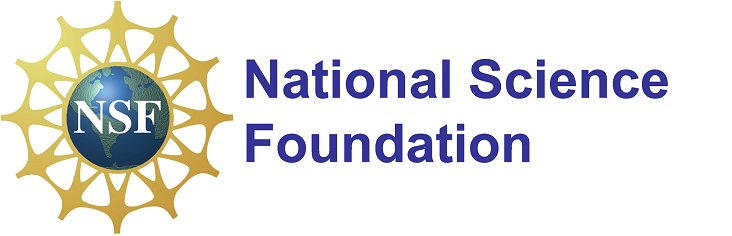

Sponsor (Acknowlegement of Support)
Any opinions, findings, and conclusions or recommendations expressed in this project are those of the author(s) and do not necessarily reflect the views of the National Science Foundation.

Award Information
Award Title: Collaborative Research: SaTC: CORE: Small: Privately Collecting and Analyzing V2X Data for Urban Traffic Modeling
Award Duration: 10/01/2021-09/30/2024 (Estimated)
Total Award Amount: $499,930
Project Abstract
When widely deployed, Vehicle-to-Everything (V2X) communications in connected vehicles can result in very large-scale and valuable datasets that can be useful for a wide range of transportation safety, mobility, and other related applications. Mandates are being proposed for all new light vehicles to install V2X devices in the near future for such beneficial data collection. A deployable privacy preserving toolkit is critically needed for privately collecting and analyzing V2X data so that the envisioned applications can be fully functional. This project aims at addressing such privacy concerns in practical V2X data collection and analysis for urban traffic modeling, and thus will facilitate the real-world deployment of connected vehicles and V2X systems/applications. Furthermore, this project integrates research results into the curricula at Illinois Institute of Technology, and University of Washington, and provides opportunities for graduate and undergraduate students, especially under-represented and minority students, to participate in cutting-edge research. It also disseminates state-of-the-art privacy preserving techniques into the intelligent transportation and connected vehicles communities.
This project develops a series of novel privacy preserving V2X data collection and analysis techniques with provable privacy guarantees. In the first research thrust, novel V2X data collection schemes will be developed to locally perturb V2X data by each vehicle and they will be aggregated for large-scale urban traffic modeling while satisfying the emerging rigorous notion of local differential privacy (LDP). In the second research thrust, novel cryptographic protocols under the secure multiparty computation (MPC) theory will be designed for the infrastructure and vehicles to securely analyze the V2X data for small-scale urban traffic modeling. Such two categories of privacy preserving techniques are expected to fundamentally advance the literature of LDP and MPC (e.g., designing new randomization mechanisms for LDP). The research team will theoretically prove the privacy guarantees for them, and experimentally evaluate their system performance on emulation platforms, as well as deploy them in real-world connected vehicles testbeds.
Team Members
Lead PI: Yuan Hong
Co-PIs: Jeff Ban and Kevin Jin
Ph.D. Students: Bingyu Liu, Shangyu Xie, Han Wang, and TBD
Related Publications
Research Products (Student Advisee):
- Bingyu Liu, Shangyu Xie, Han Wang, Yuan Hong, Xuegang Ban and Meisam Mohammady, VTDP: Privately Sanitizing Fine-grained Vehicle Trajectory Data with Boosted Utility , IEEE Transactions on Dependable and Secure Computing (TDSC), To Appear. [Impact Factor: 6.864]